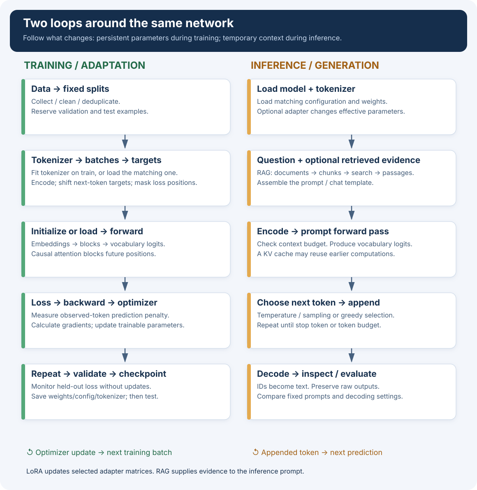

000 · From the whole system to one token
Launch the Python visual lab
conda activate llm-workshop python llm_workshop/000_global_picture/ui.py
Use the left menu to visit all nine topics. Component views update as you edit text; training and generation have explicit controls. The terminal demos remain separate.
Read the architecture and the two execution paths first. Then open the tokenizer code. No training run is needed to begin.
First, what object are we building?
For a sequence of text tokens, it computes scores for possible next tokens. Repeating the prediction and selecting a token each time produces text. A useful assistant also needs suitable training, prompt formatting and supporting software.
Code specifies embeddings, attention, feed-forward layers and how data flows between them.
Weight matrices and biases influence the predictions. Training adjusts these numbers; a checkpoint stores them.
An algorithm, vocabulary and rules translate text into integer IDs and generated IDs back into text.
We start with a complete but untrained tiny GPT-style network. Most weight matrices start randomly; some values, such as normalization scales and biases, have fixed initial values. Nothing has yet learned English from our examples. The tokenizer can already encode text, and the network can already calculate predictions.
GPT means Generative Pretrained Transformer. Our code implements a GPT-style architecture, but the first instance is not yet pretrained. LLM means large language model; ours is deliberately tiny so we can inspect the same basic mechanisms.
Zoom 1 · What does the network look like?
Reference illustration: Jay Alammar, The Illustrated GPT-2. See the original diagrams and their license at the source.
Read this illustration from bottom to top. Horizontal slots at the bottom are token positions. Each wide purple rectangle is a transformer block. A token’s numerical representation passes through successive blocks; attention lets positions exchange information subject to the causal mask. The dots indicate more blocks.
Its 1,024 positions describe GPT-2. Our model allows 64 positions and uses only two blocks. The decoder boxes are neural-network blocks; they are not the tokenizer’s decode() function. Every block has its own parameters.
Zoom 2 · Our exact TinyGPT

llm_workshop/tiny.py. Reference vocabulary: 32 entries; width: 64; two blocks and two heads per block. Arrows show computation, not a biological brain.Zoom 3 · What is inside each named component?
| Component | What it does | What changes? |
|---|---|---|
| Token embedding | Looks up a row of 64 numbers for each token ID. | Rows are model parameters, learned during training. |
| Position embedding | Adds a vector for each position, so order matters. | Our position table is learned. Other models may use rotary positions instead. |
| Layer normalization | Rescales the features at a position before further processing. | Uses the current activations and learned scale/bias. |
| Masked self-attention | Each position forms a weighted mixture of information from itself and earlier positions. | Projection matrices are parameters; attention coefficients depend on the current input. |
| Two heads | Compute two such mixtures using separate groups of 32 features, then combine them. | No head is assigned a human label such as “grammar.” |
| Residual addition | Adds the sublayer’s update to the representation it received. | The addition itself has no learned parameters. |
| Feed-forward network | Maps 64 features to 256, applies GELU (a nonlinear function), then maps back to 64. | Its matrices/biases are learned; the same network operates at each position. |
| Vocabulary head | Maps 64 features to 32 scores at each position. | Its weight matrix/bias are learned in our implementation. |
| Softmax | Converts scores into probabilities that sum to one. | No learned parameters in the softmax operation. |
Modern models vary in normalization, positional representation, attention, feed-forward design and scale. This diagram describes our implementation; it is not a specification for every LLM.

The complete training path · changing parameters
Training is a loop around the network. The tokenizer and neural network have different preparation steps.
Collect usable documents or instruction–answer examples. Remove unwanted material and duplicates; split by document/entity so near copies do not leak across train, validation and test. Keep source and split records. Topic 004 / 006.
From scratch: build an alphabet or fit a subword vocabulary on training text. Fine-tuning: load the pretrained model’s tokenizer. Freeze the mapping for this experiment. This preparation does not train the transformer. Topic 001.
Convert text to IDs. A batch holds several sequences. Set a context length; pad or truncate deliberately. For next-token training, inputs and targets are shifted by one position. For supervised answers, select which target positions contribute to loss.
Track A initializes the tiny model. Track B loads pretrained weights and may add LoRA matrices. Both need a configuration and the matching vocabulary; pretrained does not mean already adapted to your task.
IDs → token/position representations → repeated blocks → final normalization → vocabulary logits. The causal mask prevents reading future targets from the input. Topics 002 / 003.
For each scored position, inspect the probability of its observed target. Average −ln(probability). PyTorch computes cross-entropy from logits directly; a separate softmax layer is unnecessary in the training code.
Automatic differentiation calculates gradients: how a small change to a parameter affects the loss. A gradient is a sensitivity, not a new fact or a replacement weight.
Use the gradients, learning rate and optimizer state to update trainable parameters. Clear accumulated gradients at the intended update boundary. With LoRA, the selected adapter matrices change while base weights stay frozen. Repeat over batches.
At intervals evaluate held-out text without updates. Save checkpoints and configuration. Choose settings using validation; use the reserved test set for the final comparison. Loss decreasing on memorized training examples alone is insufficient.
A training step here means one optimizer update; gradient accumulation can combine multiple small batches into that update. An epoch is one pass through the training dataset. A checkpoint stores the current model; exact resume also needs optimizer, progress and random-state information.
Memory: training often keeps activations for differentiation, gradients and optimizer state as well as weights. That is why the same model can require more memory to train than to use for inference.
The complete inference path · using fixed parameters
Read model configuration, weights, matching tokenizer and optional adapter. In our first demo the weights are intentionally untrained, but the forward computation still works.
Use a plain prompt for TinyGPT. Instruction models usually need their documented chat template and role markers. Optional RAG first retrieves relevant passages and places them in this input.
Use the same saved mapping that the model expects. Budget input plus generated tokens against the context limit. A token is not necessarily a whole word.
Run the forward pass over the prompt with causal attention. The last position’s vocabulary scores predict the next token. Efficient implementations may keep per-layer keys/values in a KV cache.
Apply a decoding policy: choose the highest score or sample from a distribution, optionally adjusted by temperature or filters. Sampling randomness is separate from model training.
Append the selected ID. Stop at the configured stop token/condition or token budget; otherwise predict again. With a KV cache, only the new position needs fresh processing. Our TinyGPT recomputes its context for simplicity.
Translate token IDs back to text pieces and assemble them for display. This tokenizer decoding operation is different from a transformer decoder block. Evaluate the answer against the task or evidence.
A passage in the prompt can affect the answer immediately, while the model parameters stay fixed. The temporary context and KV cache are not newly trained knowledge. Our demonstration has no optimizer and never calls backward().
Before the neural network: what is a tokenizer?
Encoding chooses text pieces (tokens) and maps them to integer IDs. The vocabulary lists the pieces available. Some algorithms learn a vocabulary or segmentation rules from a corpus before they are used; a tokenizer is usually not another large neural network.
| Choice | Illustrative pieces | Trade-off |
|---|---|---|
| Characters | c | a | t | s | Easy to inspect; long token sequences. Our first demo uses Python Unicode characters, not UTF-8 bytes. |
| Words | cats | sleep | Shorter sequences, but a vocabulary must handle many inflections and unknown words. Splitting on spaces also loses whitespace unless preserved separately. |
| Subwords | cat | s (illustrative) | Reusable pieces can cover unfamiliar words. A frequent word may remain a single token. The actual split depends on the trained tokenizer. |
| Bytes / byte-based subwords | UTF-8 bytes, optionally merged into longer sequences | Start from byte values; a visible character may span multiple tokens. This is different from Python’s character iteration. |
These are alternatives, not a compulsory sequence of “letters, then words, then chunks.” Production tokenizers may normalize text, pre-split it, apply a learned segmentation rule, and add special tokens. Reference: Hugging Face tokenizer pipeline.
Where do IDs come from?
Suppose the vocabulary is ["<UNK>", " ", "a", "c", "t"]. Then "cat" → [3, 2, 4]. These IDs are positions in this example table. The real story-corpus table in our demo is different; the script prints it in full.
IDs are not random on each call and do not encode meaning. Our code reserves 0, sorts distinct characters, then uses enumerate. Other tokenizer implementations assign their own stable IDs. If you replace a trained model’s mapping, the same ID can select the wrong embedding row and output label. Keep tokenizer files with the model.
Two meanings of “training”
Count adjacent token pairs in a corpus. Merge a frequent pair and record the rule; repeat. Save the vocabulary and ordered rules. Our optional BPE demo displays every merge.
Use encoded sequences to predict next tokens. Compute loss, gradients and parameter updates. This learns numerical representations and prediction behavior.
After fitting a BPE tokenizer, encoding new text applies its saved rules; it does not learn new merges every time. Some tokenizers have optional randomized segmentation, but that is not part of this first demonstration. Reference: BPE training and encoding.
A RAG chunk is a passage chosen for document retrieval, often containing many tokens. Chunking documents for search and tokenizing text for the neural network solve different problems.
Architecture families: where our choice fits
Reference illustration: Jay Alammar, The Illustrated GPT-2. See the original diagrams and their license at the source.
This is a historical comparison, not a ranking of current models. Our project follows the causal decoder-only pattern on the left. The middle shows an encoder stack; the right illustrates reusing earlier segment information. None of those boxes mean that we are running three models in the demo.
| Family | Information flow | Typical use |
|---|---|---|
| Encoder-only | Represent the supplied sequence using context on both sides, subject to masking rules. | Classification, retrieval embeddings and other understanding tasks. |
| Decoder-only | Each position uses earlier/current positions to predict the following token. | Autoregressive text generation; our TinyGPT. |
| Encoder–decoder | An encoder represents the source; the decoder generates output while also attending to those source representations. | Sequence-to-sequence tasks such as translation. This family is not shown in the downloaded comparison. |
The original Transformer used an encoder–decoder design. Primary reference: Attention Is All You Need. We focus first on one architecture; comparing others becomes easier after understanding its forward pass.
Where fine-tuning and RAG fit
Domain examples → forward pass → loss → gradients → updates. LoRA trains small added matrices. QLoRA stores the frozen base in a quantized representation while training adapters. They reduce some memory costs, not all computation or activation memory.
Documents → passages → retrieval index. Question → search → selected passages + question → tokenize → generate. An index may use keyword search or a separate text embedding model. Retrieved text is context, not an automatic weight update.
Invent a handbook fact: “Instrument Neral is in room 42.” Compare the base model, a handbook adapter, and the base model given a retrieved passage. Then change the document to room 19. Ask identical questions and retain raw answers. This separates parametric recall from information supplied at answer time; it does not assume fine-tuning will memorize every fact.
Use fine-tuning when examples define desired task behavior, vocabulary or response form. Use retrieved evidence when answers should depend on specific, updateable documents. Combining both can be useful; neither guarantees correct answers.